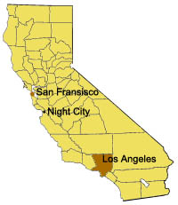

Night city dans le monde
La ville de Night City se trouve au centre de la côte ouest des États-Unis dans la baie Del Coronado. Résultat des négociations du Traité de Séparation du Nord datant de 2012, elle est considérée comme faisant partie de l'État libre de Californie du Nord. Le libre accès est garanti pour les voyageurs en provenance de l'État Libre de la Californie du Sud Alliée. Les déplacements dans les villes voisines durent de 4 à 6 heures jusqu'à San Francisco et Los Angeles, en fonction de l'état des routes et de la qualité des routes.
Après la phase de reconstruction, l'emplacement de la ville est resté en grande partie le même, avec de légères différences dans le paysage qui l'entoure. Night City est entourée de la région des Badlands, qui est majoritairement inhospitalière, cependant, grâce aux fermes de Biotechnica, la partie sud l'est un peu moins.